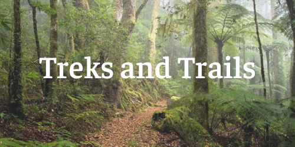

I am a full-stack Software Developer bringing my powerful problem solving skills, creative drive, and passion for accessibility to the tech world. I come to the field with a toolbox of strengths from my career as a scientist, a project manager and a marketing professional. My work is inspired and informed by smart design, efficient analysis, and increased accessibility.
Experience
Technology
- JavaScript
- HTML
- CSS
- Node.js
- Express
- Jest Q-Unit
- SQL / PostgreSQL
- MongoDb
- Mongoose
- Travis
Tools
- Heroku
- GitHub
- Adobe CS
- Adobe xD
- TDD
- Compass
- Postman
Other Tools
- WordPress
- ArcGIS
- TDD
Select Projects
-
Daily tarot card tracker that allows the user to track trends in their card readings and store information for each card pulled.
Tech: Node, Express, Vanilla JS, HTML, CSS
-

Node based back end Twitter bot using Markov Chain technology to create predictive text sentences.
Tech: Node, Express, MongoDB, Mongoose, HTML, CSS, Vanilla JS
-

Combined information from 5 different 3rd party APIs to create informative front end hike and camping search site.
Tech: Vanilla JS, HTML, CSS, SQL, Postgres, Node, Express